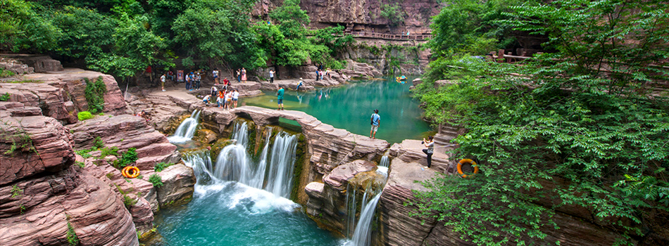
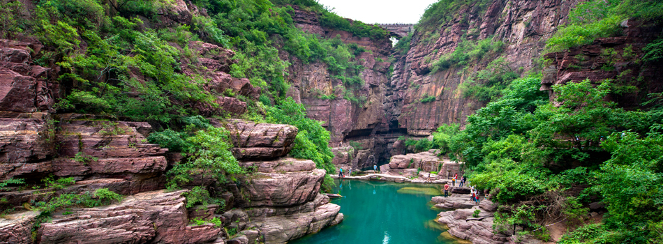
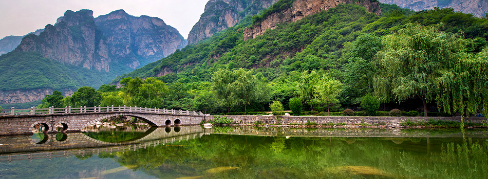

一直很憧憬的河南果然很好玩
小時候常看「大陸尋奇」節目，對中國各個省份都非常有興趣，這次所到的河南更是我多年以前就一直想來遊玩，加上每次看少林寺介紹或電影，總會懷疑在中國內地，真的有這種寺廟嗎！？而沒想到有一天我居然有機會抵達傳說中的少林寺，一睹寺裏的武功、古蹟，讓我超級興奮，除此之外其他像「愚公移山」裡的王屋山，以及雲台山裡的潭瀑峽、紅石峽…等景點，都讓我大開眼界呢！
雲台山風景區
歷史上曾被竹林七賢選為聚會地、張良隱居的雲台山，可想而知它風景有多麼迷人!!! 讓英雄雅士逗留，其中的紅石峽的紅石地貌，潭瀑峽、泉瀑峽裡面，可說是三步一泉、五步一瀑、十步一潭，處處皆是美景。

雲台山‧紅石峽
有「中原第一奇峽」之稱的紅石峽，擁有34億年前的岩層構成它獨特的美景，加上泉瀑爭流，峭壁懸崖，以及天然溶洞，春天綠樹點綴、夏天飛瀑壯麗、秋天楓紅滿谷、冬天白雪其間，四季風采各異，是它多采多姿的魅力特色。

雲台山‧太行山大峽
太行山山體大都是沉積岩，岩石層層之間分割很明顯，感覺就像雲母一樣可以層層剝離，組成了大峽谷有種奇特的美麗，而其中最美的桃花谷，加入了瀑布碧潭，山、谷、潭、洞，構成了一幅山靈水秀的峽谷水韻畫。
